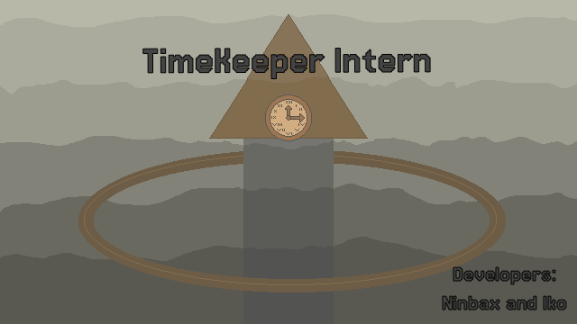
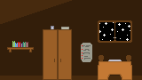
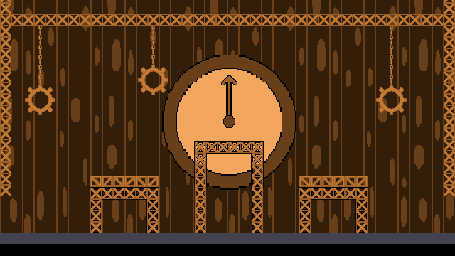

Nesse jogo, você tem que manter a ordem na torre do tempo snedo um funcionário dela.
Sobre o Jogo
TimeKeeper Intern é um jogo de plataforma e quebra-cabeças criado para a GMTK Game Jam, onde você controla um estagiário responsável por manipular o tempo para resolver desafios e avançar pelas salas de trabalho. Com mecânicas baseadas em desacelerar, acelerar e reverter eventos, o jogo mistura precisão, lógica e criatividade para superar obstáculos em um escritório caótico onde o tempo nunca está ao seu favor.
Galeria


